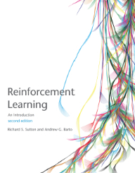
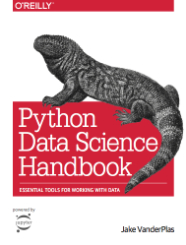
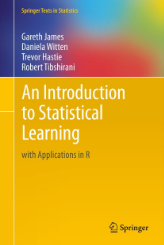
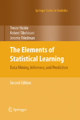

Open Source Books
-

Richard S. Sutton and Andrew G. Barto (2018).
Reinforcement Learning: An Introduction.
MIT press, 2nd Edition.
incompleteideas.net/book/the-book.html
-
Ian Goodfellow, Yoshua Bengio, and Aaron Courville (2016).
Deep Learning.
MIT Press.
www.deeplearningbook.org
-

Jake VanderPlas (2016).
Python Data Science Handbook: Essential Tools for Working with Data.
O'Reilly Media, Inc.
jakevdp.github.io/PythonDataScienceHandbook
(see errata
here)
-

Gareth James, Daniela Witten, Trevor Hastie, and Robert Tibshirani (2013).
An Introduction to Statistical Learning with Applications in R.
Springer.
www-bcf.usc.edu/~gareth/ISL
-

Trevor Hastie, Robert Tibshirani, and Jerome Friedman (2009).
The Elements of Statistical Learning: Data Mining, Inference, and Prediction.
Springer, 2nd Edition
web.stanford.edu/~hastie/ElemStatLearn